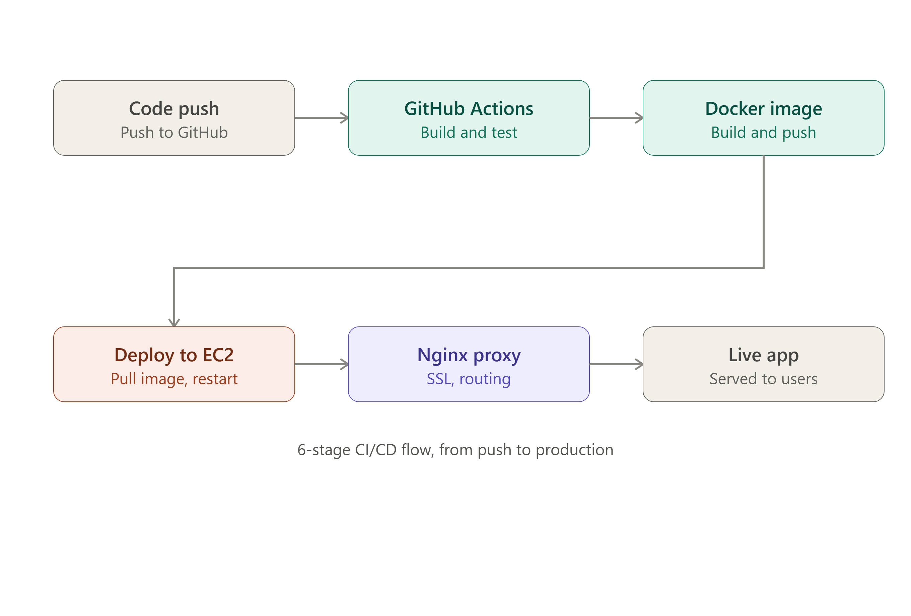

Cloud & DevOps Engineer / Open to full-time roles
Shipping should feel repeatable.
I build the cloud infrastructure, deployment pipelines, and observability habits that help teams move from “works on my machine” to reliable delivery.
Based in Belagavi, IndiaCurrent signal Online / learning / shipping
Field portrait / 2026IMG / 01
Scroll to inspect
Field note / 001
Infrastructure is invisible when it is doing its job. That is the point.
About / Context
Production instincts. Still learning fast.
Cloud and DevOps engineer focused on taking the manual steps out of delivery without losing the context behind them.
I like the layer between code and confidence: the pipeline, the container, the reverse proxy, the moment a deployment becomes boring.
My work spans AWS infrastructure, Docker and Kubernetes orchestration, Linux automation, and CI/CD with GitLab and Jenkins. During my Cloud DevOps internship, I deployed secured public applications on EC2 with Nginx and Cloudflare SSL, then replaced manual releases with repeatable pipelines.
I am completing a B.E. in Computer Science at S.G. Balekundri Institute of Technology and am open to Cloud Engineer, DevOps Engineer, and SRE roles across India—remote, hybrid, or onsite.
Prefer repeatable systems.
Leave a cleaner runbook.
Experience / Timeline
Hands-on, close to the metal.
A short record of the environments where I learned to deploy, debug, and document with care.
Jan — May
2026
2026
Cloud DevOps Intern
Softmusk Info Pvt. Ltd.
Belagavi / Live engineering environment
Worked across AWS EC2, Docker, Nginx, Cloudflare SSL, GitLab CI/CD, Jenkins, Linux shell scripting, and Kubernetes. Built deployment paths that turned a manual release process into a repeatable one.
< 5 mindeployment time after automation
Jun — Aug
2026
2026
AWS Intern
Internship Studio
Cloud training / Infrastructure fundamentals
Completed hands-on AWS training across core cloud services and infrastructure fundamentals, building the foundation for the deployment and automation work that followed.
AWScloud foundations
2022 — 2026
Education
S.G. Balekundri Institute of Technology
Bachelor of Engineering / Computer Science
Belagavi, India. Building a broad base in programming, systems, web technologies, and the practical habits required to operate software after it ships.
7.68CGPA
Selected work / Systems
Proof in the pipeline.
Three projects that show how I think about delivery, orchestration, and safe access to infrastructure.
01 / Release engineeringUnder 90 sec

Automated Web App Deployment Pipeline
Containerized a Vite web app, deployed it on AWS EC2, and configured Nginx as a reverse proxy for live traffic. GitLab CI/CD replaced manual release steps with repeatable, on-demand deployments.
Read the operating note
The project’s focus was not just getting a server online—it was making the route from code push to public deployment fast, visible, and safe to repeat.
02 / GitOps observabilityRecovered by revert
K8s GitOps Pipeline
Deployed a Kubernetes GitOps workflow on kind with ArgoCD auto-syncing manifests from Git, with Prometheus and Grafana monitoring live application metrics.
Read the operating note
Diagnosed a Kustomize image-reference bug, an Ingress host conflict, and a live-injected liveness-probe failure. The recovery path was a Git revert rather than a manual patch.
03 / Secure utilityCustom domain
File Vault — School File Sharing App
Built and deployed a password-protected file storage and sharing tool with subject-section organization, hardened with Helmet and rate-limiting.
Read the operating note
A practical file utility designed around protected access, clear subject organization, and a deployment surface that could be maintained without ceremony.
Toolkit / Systems map
The instruments I reach for.
A working set shaped by deployment work, infrastructure fundamentals, and a preference for tools that make state visible.
Cloud
AWS / EC2AWS / S3AWS / IAMAWS / VPCAzure fundamentalsGCP fundamentals
Delivery
DockerKubernetesGitLab CI/CDJenkinsArgoCDTerraformKustomize
Observe
PrometheusGrafanaLinuxShell scriptingNginxCloudflare SSL
Build
JavaPythonCSQLJavaScriptNode.jsExpress.jsGit / GitHub
Credentials / Verified
AWS Cloud Practitioner Essentials — AWS Training & Certification
May 2026AI – DevOps Engineer Foundation Course — Reliance Foundation Skilling Academy
May 2026AWS Internship — Certificate of Training & Certificate of Internship — Internship Studio
ISAWST3339751 / ISAWSI3339751Contact / Next signal
Let’s make your delivery path boring.
If you are building a team that cares about reliable releases, clear ownership, and infrastructure that can be understood by the next person, I would like to hear from you.